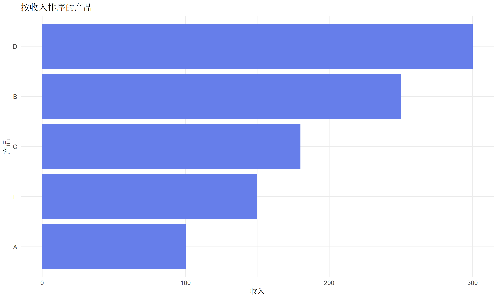
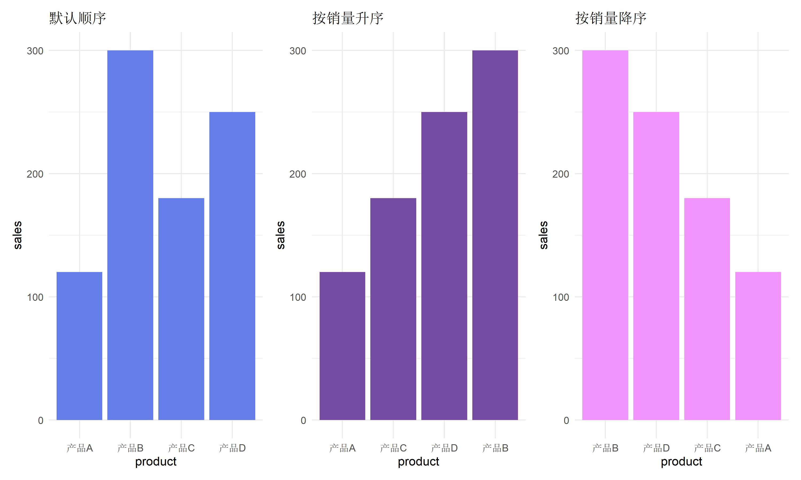
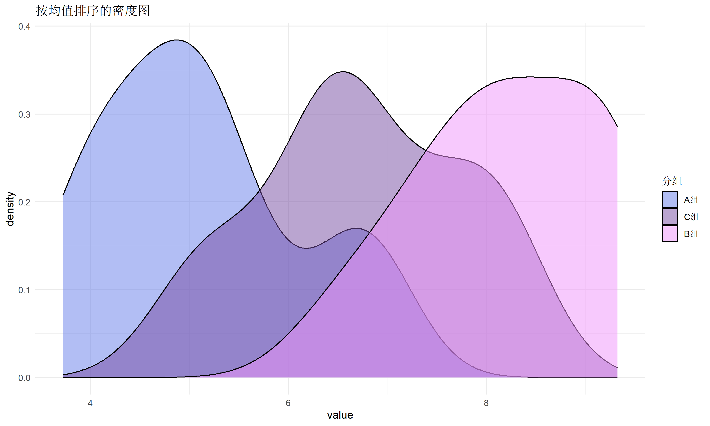
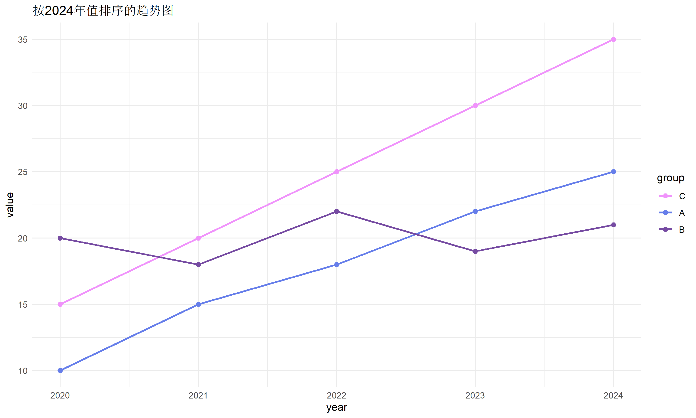
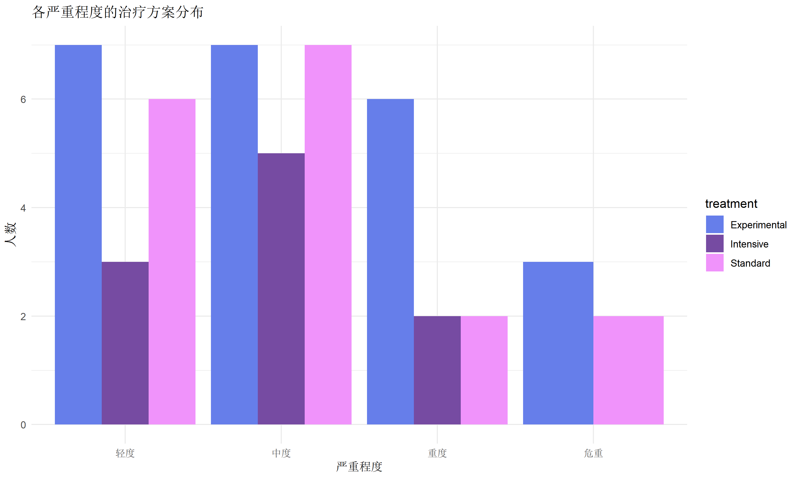
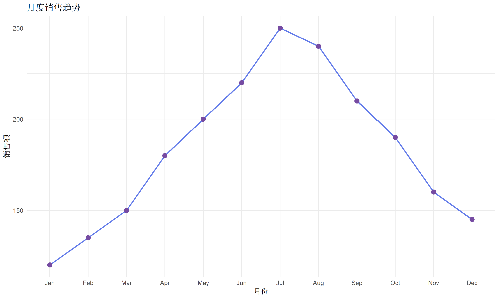

# 安装并加载必要的包
if (!require("forcats")) install.packages("forcats")
if (!require("dplyr")) install.packages("dplyr")
if (!require("ggplot2")) install.packages("ggplot2")
if (!require("tibble")) install.packages("tibble")
library(forcats)
library(dplyr)
library(ggplot2)
library(tibble)forcats 因子处理完全指南
实用操作
数据处理
因子处理
forcats 包是 tidyverse 生态中处理因子（分类变量）的核心工具，提供直观的函数让因子操作变得简单高效。
什么是因子？
在 R 语言中，因子（factor） 是用于表示分类数据的特殊数据类型。与字符型不同，因子有预定义的水平（levels），这些水平决定了数据的取值范围和顺序。
因子在以下场景中非常重要：
| 应用场景 | 说明 |
|---|---|
| 统计建模 | 回归分析中自动生成哑变量 |
| 可视化 | 控制图例和坐标轴的顺序 |
| 数据验证 | 限制变量只能取特定值 |
| 分组分析 | 按类别进行汇总统计 |
因子基础
创建因子
# 从字符向量创建因子
education <- c("本科", "硕士", "博士", "本科", "高中", "硕士")
edu_factor <- factor(education)
edu_factor[1] 本科 硕士 博士 本科 高中 硕士
Levels: 本科 博士 高中 硕士# 查看因子水平
levels(edu_factor)[1] "本科" "博士" "高中" "硕士"# 指定水平顺序（有序因子）
edu_ordered <- factor(
education,
levels = c("高中", "本科", "硕士", "博士"),
ordered = TRUE
)
edu_ordered[1] 本科 硕士 博士 本科 高中 硕士
Levels: 高中 < 本科 < 硕士 < 博士因子的问题
Base R 的因子操作存在一些痛点：
# 问题1：默认按字母顺序排序
treatment <- factor(c("Control", "Treatment A", "Treatment B"))
levels(treatment) # 字母顺序，而非逻辑顺序[1] "Control" "Treatment A" "Treatment B"# 问题2：修改水平顺序繁琐
# 需要重新创建因子或使用复杂的索引操作
# 问题3：添加新水平容易出错
# 直接赋值可能产生 NAforcats 包完美解决了这些问题！
forcats 核心函数
查看因子信息：fct_count 和 fct_unique
# 创建示例数据
responses <- factor(c("同意", "中立", "反对", "同意", "同意", "中立", "反对", "同意"))
# 统计各水平频数
fct_count(responses)# A tibble: 3 × 2
f n
<fct> <int>
1 反对 2
2 同意 4
3 中立 2# 获取唯一水平（类似 levels() 但返回因子）
fct_unique(responses)[1] 反对 同意 中立
Levels: 反对 同意 中立重新排序水平
手动排序：fct_relevel
fct_relevel() 允许手动指定水平顺序。
# 原始因子
size <- factor(c("Small", "Medium", "Large", "Small", "Large"))
levels(size) # 字母顺序[1] "Large" "Medium" "Small" # 重新排序
size_ordered <- fct_relevel(size, "Small", "Medium", "Large")
levels(size_ordered)[1] "Small" "Medium" "Large" # 只移动特定水平到开头
size_small_first <- fct_relevel(size, "Small")
levels(size_small_first)[1] "Small" "Large" "Medium"# 移动到末尾（使用 after 参数）
size_large_last <- fct_relevel(size, "Large", after = Inf)
levels(size_large_last)[1] "Medium" "Small" "Large" # 移动到特定位置
size_medium_second <- fct_relevel(size, "Medium", after = 1)
levels(size_medium_second)[1] "Large" "Medium" "Small" 按频率排序：fct_infreq 和 fct_inseq
# 示例数据
colors <- factor(c("红", "蓝", "红", "绿", "红", "蓝", "红", "绿", "绿"))
# 按频率降序排序
colors_freq <- fct_infreq(colors)
levels(colors_freq)[1] "红" "绿" "蓝"# 按频率升序
colors_freq_asc <- fct_rev(fct_infreq(colors))
levels(colors_freq_asc)[1] "蓝" "绿" "红"# 按数字顺序（适用于 "1", "2", "10" 等）
nums <- factor(c("1", "2", "10", "20", "3"))
levels(fct_inseq(nums))[1] "1" "2" "3" "10" "20"按另一变量排序：fct_reorder
fct_reorder() 是可视化中最常用的函数，根据另一个变量的统计值重排因子。
# 创建示例数据
sales <- tibble(
product = factor(c("A", "B", "C", "D", "E")),
revenue = c(100, 250, 180, 300, 150)
)
# 按收入排序
sales <- sales %>%
mutate(product = fct_reorder(product, revenue))
levels(sales$product)[1] "A" "E" "C" "B" "D"# 可视化效果
ggplot(sales, aes(x = revenue, y = product)) +
geom_col(fill = "#667eea") +
labs(title = "按收入排序的产品", x = "收入", y = "产品") +
theme_minimal()
# 使用自定义函数排序
# 例如：按收入的中位数排序
multi_sales <- tibble(
product = factor(rep(c("A", "B", "C"), each = 3)),
revenue = c(100, 120, 110, 200, 250, 220, 150, 160, 155)
)
multi_sales <- multi_sales %>%
mutate(product = fct_reorder(product, revenue, .fun = median))
levels(multi_sales$product)[1] "A" "C" "B"按出现顺序：fct_inorder
# 按数据中首次出现的顺序排列
first_appearance <- factor(c("C", "A", "B", "C", "A"))
levels(first_appearance) # 默认字母顺序[1] "A" "B" "C"levels(fct_inorder(first_appearance)) # 按出现顺序[1] "C" "A" "B"反转顺序：fct_rev
size <- factor(c("Small", "Medium", "Large"),
levels = c("Small", "Medium", "Large")
)
# 反转水平顺序
size_rev <- fct_rev(size)
levels(size_rev)[1] "Large" "Medium" "Small" 移动特定水平：fct_shift
days <- factor(c("Mon", "Tue", "Wed", "Thu", "Fri"),
levels = c("Mon", "Tue", "Wed", "Thu", "Fri")
)
# 向左移动（Mon 变成最后一个）
days_shift <- fct_shift(days, n = 1)
levels(days_shift)[1] "Tue" "Wed" "Thu" "Fri" "Mon"# 向右移动
days_shift_right <- fct_shift(days, n = -1)
levels(days_shift_right)[1] "Fri" "Mon" "Tue" "Wed" "Thu"重新编码水平
修改水平名称：fct_recode
# 原始数据
satisfaction <- factor(c("1", "2", "3", "4", "5", "3", "4", "5"))
# 重新编码
satisfaction_named <- fct_recode(satisfaction,
"非常不满意" = "1",
"不满意" = "2",
"中立" = "3",
"满意" = "4",
"非常满意" = "5"
)
levels(satisfaction_named)[1] "非常不满意" "不满意" "中立" "满意" "非常满意" fct_count(satisfaction_named)# A tibble: 5 × 2
f n
<fct> <int>
1 非常不满意 1
2 不满意 1
3 中立 2
4 满意 2
5 非常满意 2合并水平：fct_collapse
# 详细分类
education <- factor(c("小学", "初中", "高中", "本科", "硕士", "博士", "高中", "本科"))
# 合并为粗略分类
education_collapsed <- fct_collapse(education,
"初等教育" = c("小学", "初中"),
"中等教育" = "高中",
"高等教育" = c("本科", "硕士", "博士")
)
levels(education_collapsed)[1] "高等教育" "初等教育" "中等教育"fct_count(education_collapsed)# A tibble: 3 × 2
f n
<fct> <int>
1 高等教育 4
2 初等教育 2
3 中等教育 2合并低频水平：fct_lump
fct_lump 系列函数用于将低频水平合并为 “Other”。
# 示例数据
countries <- factor(c(
rep("中国", 50), rep("美国", 30), rep("英国", 10),
rep("法国", 5), rep("德国", 3), rep("日本", 2)
))
# 保留前 n 个最常见的水平
fct_count(fct_lump_n(countries, n = 3))# A tibble: 4 × 2
f n
<fct> <int>
1 美国 30
2 英国 10
3 中国 50
4 Other 10# 保留至少占比 p 的水平
fct_count(fct_lump_prop(countries, prop = 0.1))# A tibble: 3 × 2
f n
<fct> <int>
1 美国 30
2 中国 50
3 Other 20# 保留至少出现 min 次的水平
fct_count(fct_lump_min(countries, min = 5))# A tibble: 5 × 2
f n
<fct> <int>
1 法国 5
2 美国 30
3 英国 10
4 中国 50
5 Other 5# 自定义 "Other" 的名称
fct_count(fct_lump_n(countries, n = 3, other_level = "其他国家"))# A tibble: 4 × 2
f n
<fct> <int>
1 美国 30
2 英国 10
3 中国 50
4 其他国家 10匿名化水平：fct_anon
# 原始敏感数据
patients <- factor(c("张三", "李四", "王五", "张三", "李四"))
# 匿名化
patients_anon <- fct_anon(patients, prefix = "Patient_")
levels(patients_anon)[1] "Patient_1" "Patient_2" "Patient_3"添加和删除水平
删除未使用的水平：fct_drop
# 创建有多余水平的因子
colors <- factor(c("红", "蓝", "红"), levels = c("红", "蓝", "绿", "黄"))
levels(colors) # 包含未使用的 "绿" 和 "黄"[1] "红" "蓝" "绿" "黄"# 删除未使用的水平
colors_clean <- fct_drop(colors)
levels(colors_clean)[1] "红" "蓝"# 只删除特定水平
colors_keep_green <- fct_drop(colors, only = "黄")
levels(colors_keep_green)[1] "红" "蓝" "绿"添加水平：fct_expand
# 原始因子
sizes <- factor(c("S", "M", "L"))
# 添加新水平
sizes_expanded <- fct_expand(sizes, "XS", "XL")
levels(sizes_expanded)[1] "L" "M" "S" "XS" "XL"统一多个因子的水平：fct_unify
# 两个来自不同数据源的因子
survey1 <- factor(c("同意", "中立", "反对"))
survey2 <- factor(c("同意", "反对", "强烈反对"))
# 统一水平
unified <- fct_unify(list(survey1, survey2))
lapply(unified, levels)[[1]]
[1] "反对" "同意" "中立" "强烈反对"
[[2]]
[1] "反对" "同意" "中立" "强烈反对"与 ggplot2 联动
因子在可视化中最重要的作用是控制元素的顺序。
控制柱状图顺序
# 示例数据
sales_data <- tibble(
product = c("产品A", "产品B", "产品C", "产品D"),
sales = c(120, 300, 180, 250)
)
# 默认顺序（字母序）
p1 <- ggplot(sales_data, aes(x = product, y = sales)) +
geom_col(fill = "#667eea") +
labs(title = "默认顺序") +
theme_minimal()
# 按销量排序
p2 <- sales_data %>%
mutate(product = fct_reorder(product, sales)) %>%
ggplot(aes(x = product, y = sales)) +
geom_col(fill = "#764ba2") +
labs(title = "按销量升序") +
theme_minimal()
# 按销量降序
p3 <- sales_data %>%
mutate(product = fct_reorder(product, sales, .desc = TRUE)) %>%
ggplot(aes(x = product, y = sales)) +
geom_col(fill = "#f093fb") +
labs(title = "按销量降序") +
theme_minimal()
library(patchwork)
p1 | p2 | p3
控制图例顺序
# 分组数据
group_data <- tibble(
category = rep(c("A组", "B组", "C组"), each = 10),
value = c(rnorm(10, 5), rnorm(10, 8), rnorm(10, 6))
)
# 按均值排序图例
group_data %>%
mutate(category = fct_reorder(category, value, .fun = mean)) %>%
ggplot(aes(x = value, fill = category)) +
geom_density(alpha = 0.5) +
scale_fill_manual(values = c("#667eea", "#764ba2", "#f093fb")) +
labs(title = "按均值排序的密度图", fill = "分组") +
theme_minimal()
控制分面顺序
# 使用 fct_reorder2 按最后一个值排序（适合折线图）
trend_data <- tibble(
year = rep(2020:2024, 3),
group = rep(c("A", "B", "C"), each = 5),
value = c(
c(10, 15, 18, 22, 25), # A: 上升趋势
c(20, 18, 22, 19, 21), # B: 平稳
c(15, 20, 25, 30, 35) # C: 快速上升
)
)
# 按最后一个值排序
trend_data %>%
mutate(group = fct_reorder2(group, year, value)) %>%
ggplot(aes(x = year, y = value, color = group)) +
geom_line(linewidth = 1) +
geom_point(size = 2) +
scale_color_manual(values = c("#f093fb", "#667eea", "#764ba2")) +
labs(title = "按2024年值排序的趋势图") +
theme_minimal()
与 dplyr 联动
在分组统计中使用
# 示例数据
survey <- tibble(
region = factor(c("北", "南", "东", "西", "北", "南", "东", "西", "北", "南")),
score = c(85, 92, 78, 88, 90, 95, 82, 85, 88, 91)
)
# 按平均分排序后分组统计
survey %>%
mutate(region = fct_reorder(region, score, .fun = mean)) %>%
group_by(region) %>%
summarise(
mean_score = mean(score),
n = n()
) %>%
arrange(desc(mean_score))# A tibble: 4 × 3
region mean_score n
<fct> <dbl> <int>
1 南 92.7 3
2 北 87.7 3
3 西 86.5 2
4 东 80 2在 case_when 中使用
# 根据条件创建有序因子
patients <- tibble(
id = 1:10,
age = c(25, 45, 67, 38, 72, 55, 29, 61, 43, 80)
)
patients <- patients %>%
mutate(
age_group = case_when(
age < 30 ~ "青年",
age < 60 ~ "中年",
TRUE ~ "老年"
),
# 转为有序因子
age_group = factor(age_group, levels = c("青年", "中年", "老年"))
)
fct_count(patients$age_group)# A tibble: 3 × 2
f n
<fct> <int>
1 青年 2
2 中年 4
3 老年 4实战案例
案例一：问卷数据处理
# 模拟问卷数据
survey_data <- tibble(
id = 1:100,
education = sample(c("高中", "本科", "硕士", "博士", "其他"), 100,
replace = TRUE, prob = c(0.2, 0.4, 0.25, 0.1, 0.05)
),
satisfaction = sample(1:5, 100, replace = TRUE),
income = sample(c("3000以下", "3000-5000", "5000-10000", "10000-20000", "20000以上"),
100,
replace = TRUE
)
)
# 处理因子
survey_clean <- survey_data %>%
mutate(
# 教育程度：合并 "其他" 并排序
education = factor(education) %>%
fct_relevel("高中", "本科", "硕士", "博士", "其他") %>%
fct_recode("本科及以下" = "其他"),
# 满意度：编码并排序
satisfaction = factor(satisfaction) %>%
fct_recode(
"非常不满" = "1", "不满" = "2", "中立" = "3",
"满意" = "4", "非常满意" = "5"
),
# 收入：排序
income = factor(income) %>%
fct_relevel("3000以下", "3000-5000", "5000-10000", "10000-20000", "20000以上")
)
# 查看处理结果
survey_clean %>%
count(education, satisfaction) %>%
head(10)# A tibble: 10 × 3
education satisfaction n
<fct> <fct> <int>
1 高中 非常不满 6
2 高中 不满 4
3 高中 中立 4
4 高中 满意 1
5 高中 非常满意 5
6 本科 非常不满 9
7 本科 不满 10
8 本科 中立 7
9 本科 满意 8
10 本科 非常满意 3案例二：医学分级数据
# 模拟疾病严重程度数据
clinical_data <- tibble(
patient_id = 1:50,
severity = sample(c("Mild", "Moderate", "Severe", "Critical"), 50,
replace = TRUE, prob = c(0.3, 0.35, 0.25, 0.1)
),
treatment = sample(c("Standard", "Intensive", "Experimental"), 50, replace = TRUE)
)
# 处理严重程度（确保正确顺序）
clinical_clean <- clinical_data %>%
mutate(
severity = factor(severity) %>%
fct_relevel("Mild", "Moderate", "Severe", "Critical") %>%
fct_recode(
"轻度" = "Mild",
"中度" = "Moderate",
"重度" = "Severe",
"危重" = "Critical"
)
)
# 统计并可视化
clinical_clean %>%
count(severity, treatment) %>%
ggplot(aes(x = severity, y = n, fill = treatment)) +
geom_col(position = "dodge") +
scale_fill_manual(values = c("#667eea", "#764ba2", "#f093fb")) +
labs(title = "各严重程度的治疗方案分布", x = "严重程度", y = "人数") +
theme_minimal()
案例三：时间序列中的月份处理
# 模拟月度销售数据
monthly_sales <- tibble(
month = factor(month.abb, levels = month.abb),
sales = c(120, 135, 150, 180, 200, 220, 250, 240, 210, 190, 160, 145)
)
# 从某个月份开始（如财年从4月开始）
monthly_sales_fy <- monthly_sales %>%
mutate(month = fct_shift(month, n = 3)) # Apr 成为第一个
levels(monthly_sales_fy$month) [1] "Apr" "May" "Jun" "Jul" "Aug" "Sep" "Oct" "Nov" "Dec" "Jan" "Feb" "Mar"# 可视化
ggplot(monthly_sales, aes(x = month, y = sales, group = 1)) +
geom_line(color = "#667eea", linewidth = 1) +
geom_point(color = "#764ba2", size = 3) +
labs(title = "月度销售趋势", x = "月份", y = "销售额") +
theme_minimal()
forcats 函数速查表
| 功能 | 函数 | 说明 |
|---|---|---|
| 查看 | fct_count() |
统计各水平频数 |
fct_unique() |
获取唯一水平 | |
| 排序 | fct_relevel() |
手动指定顺序 |
fct_infreq() |
按频率降序 | |
fct_inorder() |
按出现顺序 | |
fct_reorder() |
按另一变量排序 | |
fct_reorder2() |
按两变量关系排序 | |
fct_rev() |
反转顺序 | |
fct_shift() |
循环移动 | |
| 编码 | fct_recode() |
重命名水平 |
fct_collapse() |
合并水平 | |
fct_lump_n() |
保留前 n 个 | |
fct_lump_prop() |
按比例保留 | |
fct_lump_min() |
按最小频数保留 | |
fct_anon() |
匿名化 | |
| 修改 | fct_drop() |
删除未用水平 |
fct_expand() |
添加新水平 | |
fct_unify() |
统一多因子水平 |
总结
forcats 包让 R 中的因子处理变得直观高效：
| 优势 | 说明 |
|---|---|
| 语义化命名 | 函数名清晰表达功能 |
| 管道友好 | 与 dplyr、ggplot2 完美集成 |
| 功能全面 | 覆盖因子操作的各种需求 |
| 避免陷阱 | 安全处理水平变更 |
掌握 forcats 后，你将能够优雅地处理各种分类数据！